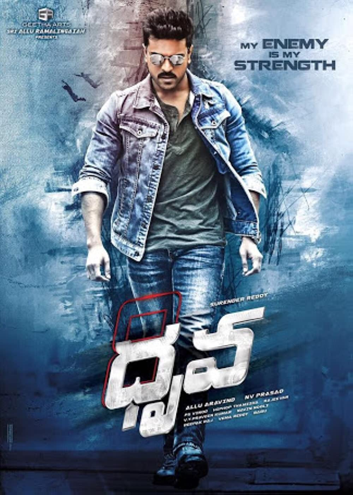

My name is ramadevi redrouthu. I have completed my bachelors in Computer Science
at stmarys Engineering College and secured 8.91 CGPA on scale of 10.
The film follows ,Trainee IPS officers Dhruva Ram Charan, Gautham Navdeep, Ranveer and Karan discreetly assist the police in catching a gang which kidnapped four girls. One day, Dhruva receives a cryptic text message on his phone from an anonymous number stating that he/she is aware of their discreet activities. In the evening, they go out to meet that person who is revealed to be forensic pathologist and Dhruva's ex-girlfriend Ishika Rakul Preet Singh. Later that same night, they happen to witness the murder of a social activist named Ramarao with the pretense of snatch theft. Dhruva and his friend catch the gang and their leader and hand them over to the police. 4 days later, the leader of the gang arrives at the IPS headquarters with the Home minister. This political and organised crime comes as a shock to Dhruva and his friends.When Siddharth is arrested, Dhruva tells him that the medicine was patented in Akshara's name (despite Siddarth being the inventor) and will be made as generic medicine instead of a patent-protected one. It is also revealed that Chengalarayudu is still alive, saved by Dhruva and his gang and the public funeral held was for Gautham. Dhruva makes a deal that he would save Siddharth's life for information and evidence on all of his criminal associates and activities and gives him a bulletproof vest to fake his death during his transport to the court. They also plan to take down the setup planned by various VIPs to kill Siddharth when one of them gets close to Siddharth, Dhruva attacks him and notices that Siddharth did not wore the vest and is fatally shot by Preethi. Before dying, he tells Dhruva that he hid all the evidence in an SD card in the bulletproof vest, adding that he had not done it for the nation but because Dhruva had asked for it. Siddharth's accomplices are arrested and the film ends with Dhruva and Ishika's marriage.
